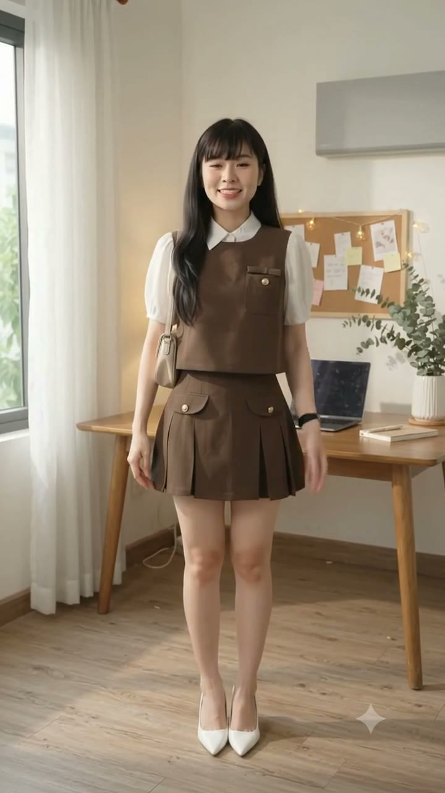
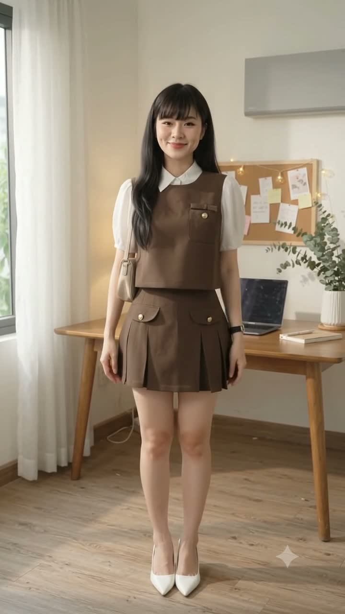
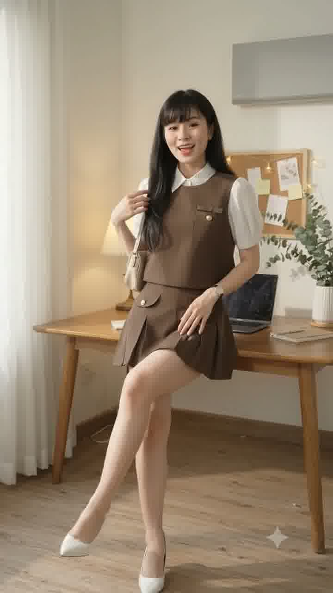

Set gile nâu + sơ mi tay bồng + chân váy xếp ly đi làm: thanh lịch, gọn dáng cho nàng 1m55

Sáng đi làm, Lisa mặc set gile nâu + sơ mi tay bồng + chân váy xếp ly nhà MORI CLOTHINGS — sơ mi trắng tay bồng cổ nhọn, gile nâu socola túi đắp nút vàng, chân váy xếp ly ngắn trên gối, đi giày cao gót nhọn trắng, đeo túi vai be. Thanh lịch, gọn dáng, 1m55 mặc lên cao hẳn. Bạn thích màu nâu hay màu đen hơn?
Đọc trước khi mua: bài viết này là gợi ý phối đồ lấy cảm hứng từ các mẫu đang bán chạy trên Shopee. Lisa là nhân vật AI, nên bài viết không phải bài đánh giá sản phẩm Lisa đã mặc thật hay đã dùng thử. Giá, chất liệu và size cần kiểm tra lại trên trang bán trước khi mua (giá thay đổi theo voucher và biến thể màu). Link mua hàng:
· Set Áo Gile Không Tay Phối Sơ Mi Tay Bồng Kèm Chân Váy Xếp Ly N301, shop MORI CLOTHINGS — 2 màu nâu và đen.
Một set đi làm đủ 3 món cùng tông nâu — áo sơ mi trắng làm điểm sáng, gile và váy cùng màu nên mặc lên là gọn gàng, thanh lịch:
Đứng toàn thân — gile nâu, sơ mi tay bồng, váy xếp ly

Xoay nhẹ — chân váy xếp ly dáng A, trên gối, khoe chân

Ngồi bên bàn làm việc — cổ nhọn, túi đắp nút vàng
Vì sao set này hợp mặc đi làm?
Sơ mi trắng tay bồng, cổ nhọn lịch sự: sơ mi trắng cổ bẻ nhọn nhỏ, tay ngắn bồng — vừa nữ tính vừa gọn vai, mặc dưới gile vẫn lộ được tay áo và cổ áo, nhìn thanh lịch mà không cứng như sơ mi công sở truyền thống.
Gile nâu socola, túi đắp nút vàng: gile không tay dáng suông tới eo, túi đắp ngực nút vàng làm điểm nhấn — vừa che được phần eo, vừa tạo lớp cho set đồ, màu nâu socola ấm mà vẫn sang.
Chân váy xếp ly ngắn trên gối: chân váy xếp ly dáng A, dài trên gối, túi đắp trước nút vàng — khoe được chân, đi lại thoải mái, dáng xòe nhẹ nên ngồi hay đứng đều không bị ôm sát, nhìn cao hẳn với dáng 1m55.
Giày trắng nhọn + túi be: giày cao gót nhọn trắng kéo dài chân, túi vai nhỏ be nhạt đeo một bên — 2 món phụ kiện sáng màu cân lại cả set nâu, nhìn vừa đủ thanh lịch mà không nặng nề.
Cách chọn set gile + váy xếp ly cho dáng nhỏ
Gile dài tới eo, đừng chọn gile dài quá hông: dáng nhỏ mặc gile dài tới eo là vừa đẹp — gile dài quá hông dễ chia người thành hai khúc, nhìn càng lùn, nhất là khi mặc cùng váy ngắn.
Váy xếp ly ngắn trên gối, đừng chọn váy dài tới bắp chân: váy xếp ly ngắn trên gối khoe được chân, chân nhìn dài ra — váy dài tới bắp chân lại che mất điểm mạnh của dáng nhỏ, nhìn nặng nề hơn.
Một màu chủ đạo, đừng phối quá 3 màu: set này chỉ có nâu – trắng – be là đủ — gile và váy cùng màu nâu tạo cảm giác liền mạch, cao ráo; phối thêm màu thứ tư dễ rối mắt, nhất là với set 3 món.
Mẹo mặc set này đẹp
Để lộ cổ áo và tay áo sơ mi: gile không tay sinh ra để khoe cổ nhọn và tay bồng của sơ mi — đừng cài gile kín cổ hay mặc áo khoác ngoài che mất, set sẽ mất điểm nhấn.
Túi xách nhỏ cùng tông be: túi vai nhỏ màu be hoặc trắng kem đi cùng set này là đủ — túi to, màu tối dễ phá mất vẻ nhẹ nhàng của cả set.
Tóc xõa thẳng hoặc buộc nửa đầu: tóc dài xõa thẳng hoặc buộc nửa đầu gọn gàng — hợp với cổ nhọn của áo sơ mi, nhìn tiểu thư mà vẫn gọn gàng đi làm.